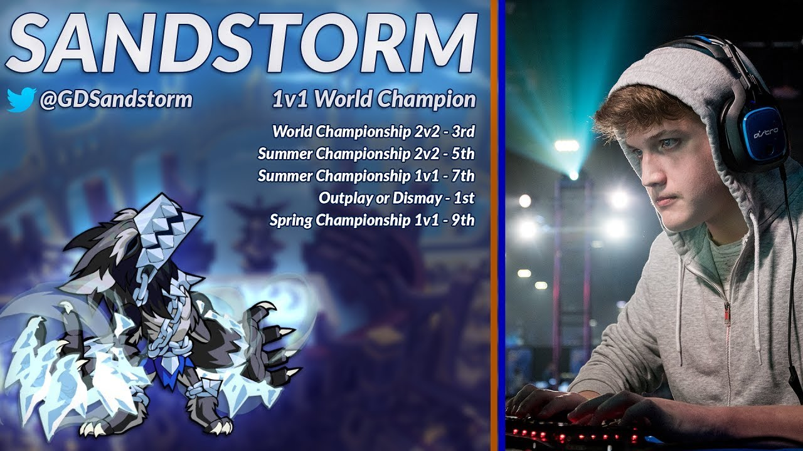
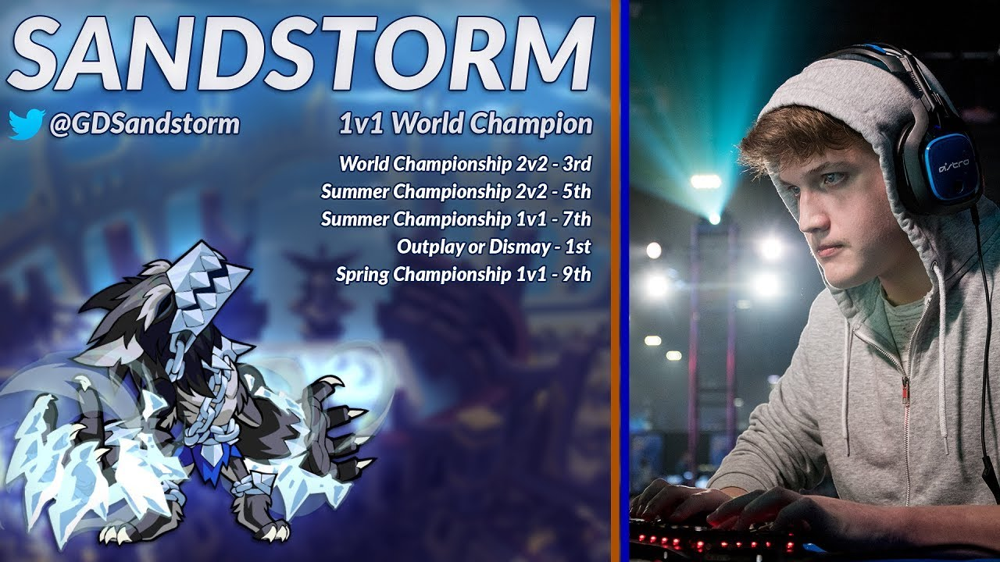
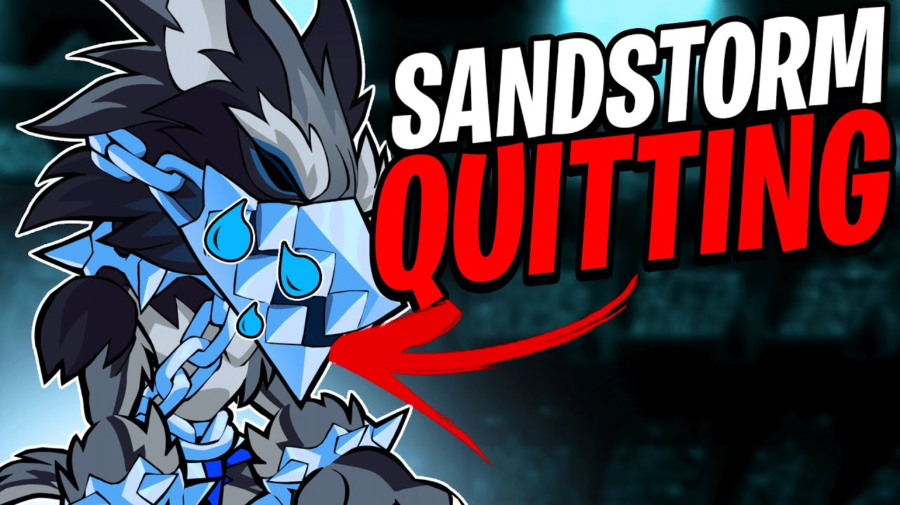
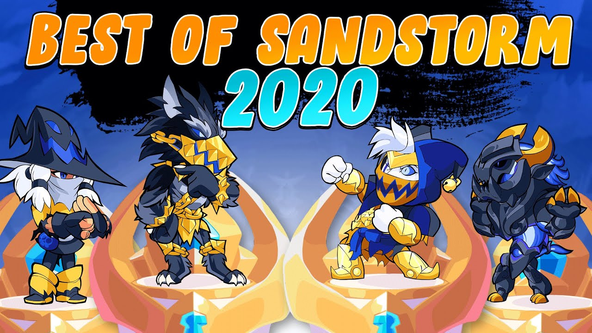

En este caso no hablo de algo decisivo, sino de un jugador que cambio el neutral del juego.
Cuando llego Sandstorm a la zona competitiva, revoluciono la manera de jugar de brawlhalla ya sea con combos con leidas o la creación de técnicas creativas que mejoraban el neutral. Muchas de esas técnicas se basaban una mejora de rapidez en el neutral o ventaja de frames de las distinas armas.
Su legado en Brawlhalla comenzó cuando ganó el torneo mundial en 2018. En cada partida se veía su dominancia en escena contra los tops mundiales, siendo el mejor jugador con el personaje Mordex, pero aun así ganó con otros personajes meta. Destaca por sus 0 to-death, 3-0 y remontadas con la guadaña. A pesar de que fue el mejor en brawlhalla (Ganando 229749.17$) también participo en otros juegos como Geometry Dash y Super Smash Bros.
Hasta que llegaron nuevos jugadores: Fozey, Snowy, Godly, Java, Luna e Impala. Destacando los dos últimos: Luna es considerado el mejor del mundo ganando torneos mundiales e Impala ganó la BCX de 2022 (Neutral pasivo con el arco). Por 2020 se empezaba a ver la caída de Sandstorm y en el 2022 anunció su retirada en Twitter (ahora llamado X).
Pero recientemente Sandstorm regresa a la escena competitiva, renovándose. En el BCX de este año (2023) quedó cuarto en el 1vs1 y séptimos en el 2vs2 con Boomie, su antiguo dúo. Mostrando que seguirá en escena por un tiempo.
Es mejor ver las partidas que describirlas. Podeís buscar Brawlhalla en YouTube y saldrán partidas o en el canal de oficial del juego.
"En caso de que haya algún dato falso o ves que falta más información, puedes enviar un email al siguiente correo: patitorbam@gmail.com"